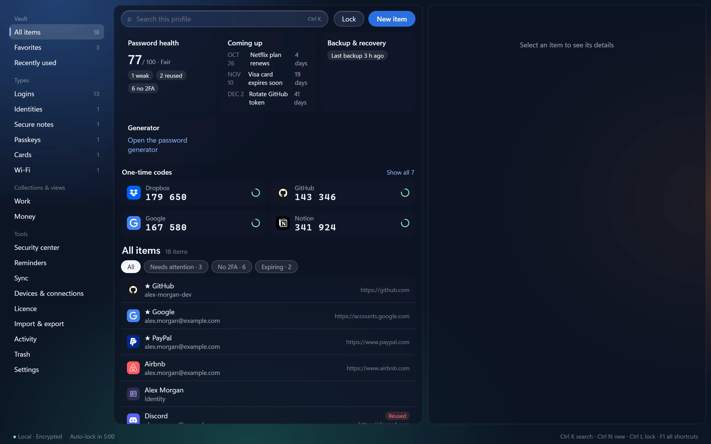

Le tue password. I tuoi dispositivi. Nessun account.
Un gestore di password che tiene la tua cassaforte sul tuo PC, Mac e telefono e sincronizza tramite il tuo Wi-Fi o la tua cartella cloud. Gratis fino a 7 elementi. Pro costa US$29.99 una sola volta, con ogni aggiornamento gratis, per sempre.
Gratis fino a 7 elementi. Pro costa US$29.99 una sola volta, senza abbonamento.
Estensione del browser Aggiungi a Edge Aggiungi a Chrome Aggiungi a Firefox Vedi tutti i download
- Nessun account
- Nessun server LocalGateKeys
- Nessuna telemetria
L'app
Windows
Microsoft Store



Mac
Mac App Store


iPhone
App Store


iPad
App Store


Android
In arrivo


Casseforti demo con account inventati. Usa le frecce per vedere altro.
Decidi tu dove vanno le copie cifrate
Ogni dispositivo mantiene una propria cassaforte cifrata. Nulla lascia un dispositivo se non lo configuri tu. La sincronizzazione tra il PC e l'iPhone fa parte di Pro.
-
Da nessuna parte
L'impostazione predefinita, in ogni edizioneLa cassaforte resta sul tuo dispositivo. I backup pianificati sono file cifrati che conservi dove vuoi, anche su un'unità USB o in una cartella di sincronizzazione.
-
Il Wi-Fi di casa
ProAbbina il PC e l'iPhone una volta con un codice QR monouso. Quando sono sulla stessa rete e sbloccati, si sincronizzano direttamente tramite una connessione cifrata. Non è coinvolta alcuna connessione a Internet.
-
La tua cartella cloud
Pro, se la attiviPunta la sincronizzazione a una cartella cloud che già usi, come Dropbox o iCloud Drive, protetta da una password di sincronizzazione. Il tuo provider cloud conserva file cifrati che non può leggere. Noi non siamo coinvolti in alcun modo.
Cosa fa per te ogni giorno
-
Compila gli accessi in Chrome e Edge
L'estensione del browser comunica con l'app LocalGateKeys sul tuo PC tramite un piccolo componente locale. Propone solo gli accessi salvati per il sito esatto in cui ti trovi. Compila anche codici a due fattori, indirizzi e carte di pagamento, e propone di salvare nuovi accessi dopo che hai effettuato l'accesso.
Funzionano anche le passkey: un sito web può salvare una passkey nella tua cassaforte e usarla per farti accedere, e tu approvi ciascuna nell'app desktop.
L'estensione non riceve mai l'intera cassaforte, e nessuna richiesta lascia il tuo computer.
-
E nelle app Windows
La compilazione delle app desktop funziona con le finestre di accesso di programmi Windows come i launcher di giochi. Associ una finestra una volta; da quel momento un pulsante di compilazione accanto al campo password, o una scorciatoia, compila i campi salvati.
Legge solo le informazioni di accessibilità che Windows espone su una finestra. Non registra mai i tuoi tasti, non inietta mai codice in un altro programma e rifiuta di compilare se l'app o la finestra sono cambiate.
-
Codici a due fattori integrati Pro
Salva la chiave di configurazione a due fattori di un sito insieme al suo accesso, e il codice attuale compare in cima all'accesso e nella scheda Codici monouso della pagina Home. Scansiona il codice QR del sito da uno screenshot o con la webcam, oppure importa i codici da Google Authenticator. Su iPhone puoi mostrare sul tuo Apple Watch i codici che scegli.
I codici vengono calcolati sui tuoi dispositivi. I codici a due fattori fanno parte di Pro.
-
Controlla le tue password
Il generatore crea password robuste o passphrase. Lo stato delle password mostra quali password salvate sono deboli, riutilizzate, vecchie o prive di codice a due fattori, e l'app per iPhone assegna un punteggio allo stesso controllo. Se lo attivi, un controllo delle violazioni che avvii tu le confronta con le violazioni note, inviando solo cinque caratteri di un hash.
-
Anche sul tuo iPhone
L'app per iPhone compila gli accessi in Safari e in altre app, e carte e identità in qualsiasi campo di testo da iOS 18. Offre un controllo di sicurezza, la cronologia delle password, promemoria di scadenza ed Eliminati di recente con Annulla, e si apre con Face ID, Touch ID o una password dell'app facoltativa.
Si sincronizza con il tuo PC, e acquistando Pro su iPhone si sblocca anche Windows.
-
Condividi un elemento, in sicurezza
Invia un accesso o una nota come file o come codice QR, protetto da un codice di sei parole che comunichi all'altra persona in un altro modo, per esempio per telefono.
Si apre una sola volta, e tre codici sbagliati lo distruggono.
Gratis per i tuoi primi 7 elementi
Free include compilazione nel browser e nell'app per Windows, passkey, Windows Hello, una frase di recupero, condivisione sicura, importazioni e backup cifrati pianificati, per un massimo di 7 elementi senza limiti di tempo. Pro aggiunge elementi illimitati, sincronizzazione, codici a due fattori (anche su Apple Watch) e documenti.
LocalGateKeys Pro
US$29.99, una tantum.
Un solo pagamento. Ogni aggiornamento, per sempre, gratis. Nessun abbonamento.
Onesti sulla sicurezza
La cassaforte usa Argon2id e AES-256-GCM, e il progetto è descritto in termini semplici, compreso ciò da cui non protegge.
- Da password principale a chiave
- Argon2id
- Cifratura della cassaforte
- AES-256-GCM
- Account necessario
- Nessuno
- Dove vive la cassaforte
- I tuoi dispositivi